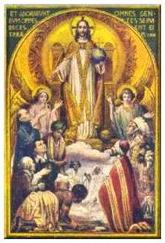
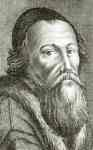

LA REALEZA DE CRISTO
Y EL MOMENTO ACTUAL[1]
Pro. Dr. Julio Meinvielle

Nuestro tema es "La realeza de Cristo y el momento actual", tema que nos obliga a tomar partida de esa verdad que es la realeza de Cristo.
Ustedes saben que la fiesta de la realeza de Cristo fue instituida por Pío XI allá por el año 1925, y el documento que publicó entonces sobre esta fiesta, la encíclica "Quas Primas", comenzaba en esta formas:
«En la primera encíclica que dirigimos una vez ascendidos al Pontificado, a todos los Obispos del Orbe católico, mientras indagábamos las causas principales de las calamidades que oprimían y angustiaban al género humano, recordamos haber dicho claramente que tan grande inundación de males se extendía por todo el mundo, porque la mayor parte de los hombres se habían alejado de Cristo y de su santa ley en la práctica de su vida, en la familia y en las cosas publicas; y que no podía haber esperanza cierta de paz duradera entre los pueblos, mientras los individuos y las naciones negasen y renegasen el imperio de Cristo Salvador».
Después explica el remedio: la vuelta a Cristo y su paz. "Por lo tanto, como advertimos entonces, es necesario buscar la paz de Cristo en el reino de Cristo. Así anunciamos también que había de ser este fin cuanto nos fuese posible por el reino de Cristo, porque nos parecía que no se puede tender mas eficazmente a la renovación y afianzamiento de la paz, sino mediante la restauración del Reino de Nuestro Señor".
De modo que el Papa ya señalaba aquí el mal y señalaba el remedio; y el remedio de la sociedad y de los individuos hoy, esta en el sometimiento al suave yugo de Cristo: Sometimiento en la inteligencia, sometimiento en la voluntad y sometimiento en los corazones por la caridad.
De tal modo, en efecto, se dice que Cristo debe reinar en la inteligencia de los hombres, no solo con la elevación del pensamiento y de su ciencia, sino también porque Él es la Verdad, y es necesario que los hombres reciban con obediencia la Verdad de Él. Igualmente reina en la voluntad de los hombres, ya porque la voluntad está entera, perfectamente sometida a la santa voluntad divina, ya porque con sus aspiraciones influye en nuestra voluntad, de tal modo que nos inflama hacia las cosas más nobles. Finalmente, Cristo es reconocido como rey de los corazones por su caridad, que sobrepasa a todo lo humano en comprensión, y por los atractivos de su mansedumbre y virilidad. Nadie entre los hombres fue tan amado, y no lo será nunca, como Jesucristo.
Ustedes saben que Cristo es rey por dos conceptos. En primer lugar, por razón de su humanidad, que ha sido asumida por el Verbo, por la Divinidad. Esa humanidad de Cristo goza, por lo tanto de una perfección que sobrepasa todo lo que el hombre puede imaginar. En segundo lugar, Cristo es Rey de los hombres por el derecho de conquista, porque con su pasión y con su muerte ha conquistado el derecho de regir a la humanidad; y en Cristo este reinado tiene tres poderes: Poder de legislar, poder de juzgar y poder de mandar, poderes que trasmitió a su Iglesia.
El reinado de Cristo no se extiende solamente sobre los individuos, sino también sobre la sociedad. Esto también lo hace notar Pío XI en la Quas Primas: «No hay diferencia entre los individuos y el consorcio civil, porque los individuos unidos en sociedad, no por eso, están menos bajo la potestad de Cristo que lo están cada uno de ellos en la sociedad pública y privada. Y no hay salvación en algún otro, ni ha sido dado del cielo a los hombres otro nombre en el cual podamos salvarnos".
Estas son las palabras de los Hechos de los Apóstoles, o sea, palabras de la Escritura. Cristo es el autor de la verdadera felicidad tanto para el mundo de los ciudadanos como para el Estado. No es feliz la ciudad por otra razón distinta de aquella por la cual es feliz el hombre, porque la nación no es otra cosa que una multitud concorde de hombres. De modo, entonces, que el hombre tiene que reconocer el imperio de Cristo sobre los individuos, pero no solamente sobre los individuos, sino sobre la sociedad. Sobre las sociedades particulares, la familia, las distintas organizaciones intermedias, los Estados, las naciones y la vida internacional.
Esta realeza de Cristo se concretaba en otros tiempos en lo que se llamaba la Cristiandad, es decir, la civilización cristiana, el orden cristiano.
La cristiandad, en rigor, comienza con Constantino, después de la época de los mártires, y conoce su esplendor más grande en el reinado de San Luis, rey de Francia; un esplendor en todas las actividades de la vida, no solamente en la política, sino en todas las otras actividades; en el arte, con Fray Angélico, en la filosofía, con Santo Tomas; en fin, todas las manifestaciones de la cultura alcanzan su esplendor.
Todo esto que estoy diciendo suena a viejo hoy, porque dentro del mundo, y particularmente dentro de la Iglesia, nos ha invadido el progresismo, y entonces existe un repudio a Constantino y a la época constantiniana, a la época carolingia, a la época gregoriana. Estamos pasando un momento en el cual los mismos católicos están renegando de dos mil años de historia; repudian la época constantiniana, repudian la Cristiandad, la civilización cristiana. Son estas, hoy, malas palabras.
A pesar de esto hay que reconocer y afirmar la grandeza de esa época histórica, y para eso nada mejor que recordar las palabras grandes de León XIII en la "inmortale Dei": «Hubo un tiempo en que la filosofía del Evangelio gobernaba los Estados, entonces aquella civilización propia de la sabiduría de Cristo y de su divina virtud, había compenetrado todas las leyes, las inteligencias, las costumbres de los pueblos, impregnando todas las capas sociales y todas las manifestaciones de la vida de las naciones. Tiempo en que la Religión fundada en Jesucristo estaba firmemente colocada en el sitial que le correspondía en todas partes, gracias al favor de los príncipes y la legitima protección de los magistrados. Tiempos en que el sacerdocio y el poder civil unían armoniosamente la concordia y la amigable de mutuos deberes."
Organizada de este modo la sociedad, produjo un bienestar superior a toda imaginación. Aún se conserva la memoria de ellos, y ella perdurará grabada en un sin numero de monumentos de aquella gesta que ningún artificio de los adversarios podrá jamás destruir ni oscurecer.
Si la Europa Cristiana civilizó a las naciones bárbaras e hizo cambiar la ferocidad por la mansedumbre, la superstición por la verdad; si rechazó victoriosa las invasiones de los bárbaros; si conservo el cetro de la civilización y si se ha acostumbrado a ser guía del mundo hacia la dignidad de la cultura humana y maestra de los demás; si ha agraciado a los pueblos con la verdadera libertad en sus varias formas; si muy sobriamente ha creado numerosas obras para aliviar la desgracia de los hombres; ese beneficio se debe, sin discusión posible, a la religión, la cual auspicio la realización de tamañas empresas y coadyuvó a llevarlas a cabo. Habrían perdurado ciertamente aún esos mismos beneficios, si ambas potestades hubiesen mantenido la concordia, y con razón mayores se podrían esperar si se acogiesen la autoridad, el magisterio y las orientaciones de la Iglesia con mayor lealtad y constancia. Las palabras que escribía Ivo de chartres al Romano Pontífice Pascual II debían respetarse como norma perpetua: "Cuando el poder civil y el sacerdote viven en buena armonía, el mundo esta bien gobernado, la Iglesia florece y prospera; pero cuando están en discordia no solo no prosperan las cosas pequeñas, sino también las cosas grandes decaen miserablemente".
La Cristiandad produjo, entonces, una época en que reinaban la concordia, la estabilidad y la paz en las familias, en la sociedad y en la Cristiandad.
Frente a esta sociedad gobernada por Jesucristo a través de la Iglesia, esta la Revolución. La Revolución quiere otra sociedad, no una sociedad estabilizada en el orden y en la paz, sino una sociedad en movimiento, en cambio, en dialéctica.
La Revolución, en su esencia, representa la replica exacta de la primera rebelión del hombre contra Dios, tal como ha sido relatada en el Génesis; ella toma por su cuenta la frase del tentador: "Seréis como dioses". Su apoyo, su soporte, es la filosofía del devenir puro que se opone radicalmente a la filosofía del Ser, la de Dios, que se presenta en el Antiguo Testamento como "Aquél que es el que es".
La Revolución no puede ser considerada como una concepción bien definida del mundo, ya que ella quiere representar su devenir perpetuo; no hay propiamente verdad revolucionaria, sino solamente una cosa que quiere ser transformación del mundo con el hombre en perpetuo movimiento. El hombre no es, el hombre se hace; el mundo no es, el mundo se crea; por lo tanto, no hay verdad ni falsedad, ni bien ni mal, se maneja con la dialéctica, la famosa dialéctica hegeliana, en la cual se pasa de la afirmación a negación, que se superan en la síntesis, y así anda dando el mundo un espiral sin llegar a la meta.
La Revolución es dialéctica, y con la dialéctica se destruye todo un mundo fundado en la Verdad, en el Ser, en la estabilidad; es decir, en el sometimiento del hombre a las leyes naturales y sobrenaturales, al derecho natural, a una concepción de que el hombre es un compuesto, que tiene una esencia, y que no hay que contrariar a esta esencia, sino que hay una concepción de que el hombre es un compuesto, que tiene una esencia y que no hay contrariar a esta esencia, sino que hay que respetarla. La Revolución no reconoce ni naturaleza ni sobrenaturaleza, y la revolución opera con la dialéctica en la destrucción de la Cristiandad, y esto lo viene haciendo no desde ahora, no desde el tiempo de Marx, ni desde Hegel, sino que lo viene haciendo desde que comenzó la Revolución hace cinco siglos.
La Iglesia, aunque su destino definitivo sea la vida futura, logró edificar aquí en la tierra una ciudad, aunque imperfecta como todo lo humano, ostenta las condiciones esenciales para ser y denominarse católica. Pero una ciudad católica es una realización muy difícil que solo puede darse milagrosamente bajo la acción de una providencia especial.
El hombre ha quedado de tal suerte, herido en el estado que tiene en este mundo, en las facultades más naturales, que cuando se ordena naturalmente queda en estado de equilibrio inestable, muy difícil de mantener. Necesita de la Gracia para moverse en ese estado, gracia que se le da si la pide.
La Civilización o Ciudad Católica es un milagro, y tiene muchos enemigos interiores y exteriores. Los enemigos interiores provienen del mismo hombre, pues si no es muy humilde para sostener el Don Divino, va a flaquear, caer y perderlo todo y perderse. Los enemigos son el Diablo, príncipe de este mundo, y los pueblos judíos y paganos, que van a tratar con toda clase de astucia de destruir la Cristiandad. Para destruir la Cristiandad se hecha mano de armas dialécticas. ¿Qué es la dialéctica? La dialéctica consiste en romper, separar y dividir lo que esta unido. Toda destrucción es separación; así como la vida es unión, unión de la creatura con el Creador, de la naturaleza humana con la Divina, de la razón con la Revelación, de la política con la teología, del imperio con la sociedad contra el Sacerdocio. Metieron cuñas para separar y dividir lo que por disposición divina esta unido, y llegó un momento en que la separación se produjo. Se separo el sacerdocio del imperio, la Teología de la filosofía, la política de la religión, la razón de la Fe, la naturaleza de la sobrenaturaleza, las naciones de la Cristiandad, los pueblos del Ungido de Dios.
Consumada la primera ruptura, producida la primera quiebra, no quedaba sino una alternativa; o rehacer lo que se había quebrado o continuar un proceso de nueva ruptura. Y hoy día la ruptura llega a lo ultimo. En primer lugar, la sociedad civil estaba unida a la religión, pero se quiebra esta unión, se independiza la religión de la sociedad civil, y luego la sociedad misma se anarquizando; se llega a lo ultimo en todos los ordenes.
Ahora que se ha llegado al extremo, es decir que la Cristiandad no existe, la naturaleza del hombre no es respetada. En la revolución que se ha operado es tal el proceso de destrucción de la civilización cristiana, que se esta pensando unir al hombre sobre otra base para llegar a la unificación total del mundo por medio de un gobierno mundial, gobierno mundial que no va a respetar ni la naturaleza del hombre ni la sobrenaturaleza. En ese plan estamos actualmente. Ese plan, el plan de la Revolución, lo han preparado las logias masónicas desde hace siglos. En el siglo XVII aparece un personaje muy importante, el cual ya profetizo, anuncio o echo, mejor dicho, los lineamientos de un nuevo poder social fundado en la Revolución. Ese personaje es Amos Komenius.
¿Quién era Komenius? Komenius había nacido en 1892, en Moravia, de padres que pertenecían a la comunidad de los Hermanos Moravos, que habían tomado ese nombre en 1575, cuando se acordó el derecho de reunión. Eran sucesores directos de los husitas, es decir de aquellos herejes que habían nacido en Praga y que fundaron el primer régimen comunista, el más absoluto que fue instalado en Munster por los anabaptistas bajo el nombre de Reino de Dios.
Todo eso fue desecho por los príncipes de entonces y Komenius se retiró a Londres, se impregno de las obras de Bacon y de los Rosacruces, fue a Suecia, estuvo con su amigo Luis de Greer, que era de la secta de los Rosacruces, y después fue a Polonia; Y, como digo, Komenius planifico lo que había de ser la sociedad. Hizo esa planificación en la cultura por el Consejo de la Luz, en la política por un Tribunal de Paz y en lo religioso por una Unión de Iglesias. Para realizar ese plan, el plan de unificación total de la sociedad humana con un gobierno también mundial, encontró que había dos grandes enemigos.
Esto lo dejo escrito en un libro que se llama "Lux in tenebris" en 1657. Vamos a leer las paginas textuales en que denuncia a estos dos grandes enemigos.
«El Papa es el gran Anti-Cristo -dice Komenius- de la babilonia universal. La bestia que va detrás del Anti-Cristo es el Imperio Romano, el Santo Imperio Romano-Germano, y especialmente la casa de Austria. Dios no tolerara por mas tiempo estas cosas. Destruirá, por fin, el mundo de los impíos en un diluvio de sangre. Al final de la guerra el papado y la casa de Austria serán destruidas".
De modo que ya Komenius en el siglo XVII anuncia que los dos enemigos para llegar al gobierno mundial, un gobierno de la Revolución, son el Papado y la casa de Austria. El Papado, que representaba el poder espiritual, y el Santo Imperio Romano-Germano, como símbolo o como resto del poder político universal que venia de Constantino.
Este plan de Komenius se va a ir cumpliendo inexorablemente poco a poco, y se pueden indicar como fechas del cumplimiento, en primer lugar, la paz de Westafalia en 1648, en la cual se llego al reconocimiento de las religiones protestantes en Europa, perdiendo la Iglesia Católica el predominio que tenia en la sociedad; el Congreso de Viena en 1815; la perdida del poder temporal de los Papas en 1870 y el fin de la casa de Austria en 1917 con la primera guerra mundial.
Después de la Reforma los estados protestantes tenían ya un peso muy grande en los negocios de Europa, pero en 1818 se había hecho inclinar la balanza en su favor. No solo estos países, en su mayoría católicos, como Rumania y Bélgica, pasaban el poder de las monarquías protestantes, sino que la confederación Germánica, esbozando la Unidad alemana por la desaparición de un cierto numero de estados pequeños, disminuía considerablemente la influencia de la católica Austria en el centro norte de Europa, mientras que Rusia venia a dominar la parte oriental. Inglaterra, por su parte, se aseguraba con el imperio de los mares sus relaciones con la futura política imperial en el Mediterráneo, en el Medio Oriente y en el Extremo Oriente, hasta el día en que al comenzar el siglo XX controlaría, directa o indirectamente, casi un cuarto de la población del globo. En 1849 se anuncia la nueva configuración de Europa, una Europa en la cual iba a desaparecer el Papado, que realmente desaparece en 1870. El poder político iba a terminar con la Casa de Austria en 1917.
Lo que sorprende inmediatamente al observador astuto es la inversión de los polos que se ha realizado en Occidente; con el Catolicismo definitivamente evacuado de la política internacional absolutamente laicalizada, el eje no pasa ya por las capitales de los Estados católicos. París y Viena son puntos secundarios con relación a las naciones de predominancia protestante y ceden el sitio a Londres. Berlín y Nueva York. En lo internacional se va haciendo un cambio y se va anulando la influencia de la Iglesia, del Catolicismo y sobre todo del Papado, con lo que se cumple una cosa muy importante que es la siguiente: San Pablo, cuando en la carta a los Colosenses se pregunta por qué no viene el Anti-cristo contesta: El Anti-Cristo no viene porque hay un obstáculo que le impide venir. ¿Cuál es ese obstáculo? Los exegetas medievales, entre ellos Santo Tomas de Aquino, explican que el obstáculo es el Imperio Romano, y mientras perdure el Imperio Romano el Anti-Cristo no puede venir.
Y ese obstáculo ha sido removido totalmente, ya no queda nada del Imperio Romano; entonces el enemigo puede planear, puede proyectar el Imperio del Anti-Cristo, un imperio político unificado en un régimen de un gobierno sometido al enemigo, sometido al Anti-Cristo.
Como ven, estamos muy lejos de la encíclica Quas Primas y de que la sociedad universal debe estar sometida al suave yugo de Cristo.
Con esta afirmación de que el mundo va caminando al imperio del Anti- Cristo entramos en otra parte de nuestra conferencia, en la que voy a esbozar los planes del gobierno mundial.
Los planes del gobierno mundial que estan actualmente en ejecucion y que estan en lucha en este momento son dos. Uno es un gobierno mundial con el liderazgo americano, o sea, el mundo bajo el gobierno efectivo de los E.E.U.U.; el otro es un gobierno mundial con liderazgo europeo.
El gobierno mundial con liderazgo americano ha sido expuesto por un presidente americano del siglo pasado. En 1872, Grant, dos veces presidente de los E.E.U.U., inaguraba su segundo mandato con una proclamacion en la cual había un párrafo que decía: «El mundo civilizado tiende al republicanismo, hacia el gobierno del pueblo por sus representantes y nuestra republica esta destinada a servir de guía a todas las otras. Nuestro Creador prepara el mundo para convertirse, con el tiempo oportuno, en una gran Nación, que no hablará sino una sola lengua y en que todos los ejércitos y la flota no serán necesarios».
Para cumplir este gobierno mundial, las logias de la masonería mundial, sobre todo guiadas por una logia, la logia del paladismo, comenzó amover los títeres de la política mundial con ese objeto.
Para conocer cuál es el segundo plan del gobierno mundial - el de liderazgo europeo- vamos a referirnos al Pacto Sinárquico, que es un escrito que consta de trece proposiciones fundamentales y 598 artículos, en el que se explica cómo va a ser el gobierno mundial futuro.
Este pacto fue descubierto en tiempo de la ocupación de Francia. Vamos a leer solamente algunas proposiciones que nos interesan. El punto trece dice así: «El orden sinárquico que no puede concebirse fuera de la paz civilizadora, fundada sobre el honor, y honorable para todos, exige no tanto que el estado actual de las potencias sea modificado por un desplazamiento de las fronteras, sino que la vida sinárquica de cada pueblo sea respetada de modo original, que la unión federativa de Europa sea realizada, que, en fin, la sociedad mayor de las naciones sea cumplida y llevada a su realidad universal por la interposición judicial de cinco sociedades menores de naciones ya construidas de hecho y en vias de constitución en nuestra epoca». Y despues va explicando como sería esta estructura sinárquica del mundo. En cada nación se arreglaría la sociedad por orden, por capas organizadas, las cuales terminarían en tres grandes órdenes: ub orden que contemplaría todo el orden social y economicos de los pueblos; otro orden que encerraría el orden cultural de los pueblos, y en ese orden culturalestaría incluido lo religioso. Eso en cada nación del mundo, que luego se agruparían en cinco grandes federaciones: una sociedad menor de naciones britanicas, que comprenderían a Ingleterra y el Commonwealt; una sociedad menor de naciones americanas, que comprendería a E.E.U.U. y a toda América Latina; una sociedad menor que comprendería a Rusia y a todas las naciones panasiaticas que comprendería al Asia. Esto sería una estructura sinárquica piramidal, que implica la formación de cinco grandes federaciones imperiales, ya constituídas o en vías de contitución.
Este ordenamiento sinárquico del mundo se caracteriza por su equilibro mundial, por lo tanto no habría como hoy hay naciones que tienen un gran predominio, por ejemplo E.E.U.U. y Rusia, sino que habría un equilibrio, estarían todas las naciones más o menos emparejadas, dándose un equilibrio mundial más allá del colectivismo y el liberalismo. La sinarquía quiere superar la antitesis del liberalismo y del colectivismo y llegar a una sociedad sinárquica dendo se equilibren el comunismo y el liberalismo, donde se haga una cosa pareja. Eso ya está en movimiento, en constitución, siendo Francia la Nación que está haciendo toda su política, no solamente dentro de sus fronteras, sino en toda Europa.
La sinarquía no es ni liberal ni comunista, sino que está por encima de ambas ideologías tratando de compaginar un gobierno de empresarios (liberal) con los obreros (comunismo), es decir una unión de burgueses y proletarios, un equilibrio mundial más allá del colectivismo y del liberalismo, sin ninguna potencia hegemónica, bajo la acción de Francia «como lugar histórico». Esto está dicho en la proposición 578: « El imperio sinárquico francés es el lugar histórico, lo mismo que el espíritu francés es el catalizador sicológico de una grande y noble experiencia de la cooperación humana, entre las razas blancas, amarillas y negras. Nuestra ambición es perfecta: una síntesis de carácter universal que se da como la imagen de lo que la Francia metropolitana, país de síntesis demográfica y centro geográfico del mundo».
Civilizado el imperio sinárquico francés, no puede ser finalmente concebido ni querido al margen de la vida europea ni de la vida del mundo. Un programa aparentemente nacional, donde se trataría de respetar la voluntad de las naciones, de autodeterminación de los pueblos en un equilibrio mundial. Esto es lo que propone la Sinarquía.
Hay un libro de Pierre Virion («El Gobierno mundial y la contra Iglesia») que hace ver como en realidad este gobierno mundial tiende a la tecnocracia, tiende a una organización mecánica del hombre y de los pueblos, como si fuesen robots, como si fueran maquinas, como si fueran una computadora electrónica y que supone toda una acción de lavado de cerebro por medio del empleo de los métodos psicotécnicos para cambiar al hombre. Una organizacion del mundo en el cual el hombre se convierte en esclavo, pero no en esclavo del tipo antiguo, en que por terror se lo sometia a un orden y al trabajo, sino una esclavitud en la cual, usando los medios psicotécnicos, se haría entrar al hombre en la sociedad, para que haga lo que la sociedad quiere.
Todo está en ejecución, y las luchas que hay en el mundo actual están provocadas por la pugna que hay entre dos fracciones para la ejecución de estos planes.
En la primera guerra mundial se liquida la casa de Austria, que es el último resto que quedaba de orden cristiano, y se implanta el comunismo.
Viene la segunda guerra mundial y tiene como resultado el acuerdo de Yalta, que hace dos cosas fundamentales: 1º Une al mundo eslavo detrás de la cortina de hierro, cumpliendo los planes del siglo pasado. 2º Impone una política bipolar, es decir divide al mundo en dos zonas de influencia:; una que se reserva a Estados Unidos y otra que se reserva a Rusia. Y ahora se está yendo a una tercera guerra para imponer una política de gobierno mundial de tipo sinárquico, un mundialismo con el liderazgo de De Gaulle.
Todos estos hechos determinaron la aparición, desde hace unos años, de una lucha entre la política bipolar desarrollada por el acuerdo ruso- americano y la política neutralista encabezada por De Gaulle; lucha que se manifiesta en tres puntos claves: Vietnam, en el Medio Oriente y en Europa.
En el Vietnam, por ejemplo, la política que mantienen Rusia y Estados Unidos es una política de equilibrio. Cuando más temperatura hay en una de las zonas -la americana o la rusa- más los grandes tientan de clamar la fiebre y volver al estado de equilibrio. Todo pasa como si cada uno empujase a sus peones en convivencia con el otro para mantener o restablecer el equilibrio de fuerzas, y por eso no llegan a una definición ni los unos ni los otros, hecho que nos hace pensar más en un acuerdo que en una rivalidad ruso-americana.
Otro tanto pasa en Medio Oriente, donde también hay otro estado de equilibrio. Y en Europa pasa lo mismo, donde frente a la política bipolar se va desarrollando una política neutralista encabezada por De Gaulle, para que se salga del dominio de la hegemonía rusa y de la hegemonía americana y se afirme la neutralidad.
En definitiva, ¿El mundialismo logrará imponerse? Es claro aquí que no podemos conjeturar. Es difícil saber lo que va a pasar.
Por lo pronto hay que reconocer que la balanza del poder tecnológico y militar se está inclinando a favor del mundialismo americano. Los últimos acontecimientos de Europa lo revelan. Checoslovaquia, influenciada por los políticos neutralistas y por De Gaulle, estuvo a punto de pasarse a la sinarquía. Eso, evidentemente, habría sido un gran contratiempo para el liderazgo americano, pues se habría reforzado el Mercado Común Europeo. Como consecuencia, Rusia -obedeciendo a la influencia del Pentágono- lo ha impedido, ocupando militarmente a Checoslovaquia.
Sin embargo, aunque el poder militar está trabajando a favor del mundialismo americano, sería mejor, en este momento crítico y decisivo, atender al poder político de la sinarquía mundial, y sobre todo al poder de intriga, en el que son expertos los judíos que estan manejando a la sinarquía de un modo particular. La técnica va a ser la siguiente: endurecer ambos polos del sistema bipolar, para que una vez endurecidos vayan al choque y a la guerra. Este es, a mi entender, el único camino que tiene la sinarquía para abatir el evidente predominio americano y cumplir los planes sinárquicos del gobierno mundial, fundados en una igualdad de federaciones mundiales porque el poder nuclear está más o menos equilibrado; Estados Unidos podrá aniquilar a Rusia, pero Rusia puede tambien aniquilar a Estados Unidos. De esta forma se podrá pasar directamente a un gobierno mundial sobre un equilibrio de naciones sin gigantes, de naciones igualadas. Con una guerra mundial el mundialismo sinarquido se impondría.
No faltará quien piense que la guerra es una locura, Respondamos, efectivamente, que el mundo esta loco, está esquizofrénico, es por tanto lógico que se sumerja en una crisis de locura.
En efecto, no hay nada estable en la política del mundo moderno, no hay, por lo tanto, verdad. Solamente negar la existencia de una verdad inmutable viene a ser lo mismo que negar la existencia de un orden, ya que la verdad es el pensamiento de acuerdo con lo real, lo real natural y sobrenatural, naturaleza y gracia, es decir, aquel orden que conoció la cristiandad, el orden establecido por el suave yugo de Cristo.
En esta condiciones no se puede establecer orden perdurable; se condena al desorden de elegir una inestabilidad permanente, que es el estado natural de la revolucion. Las guerras y los conflictos más y más cercanos y sangrientos son inevitables a medida que se quiere el devenir, el puro cambio, y no el Ser.
El deseo de paz está seguramente en el corazón de cada uno, pero poner la paz sin Dios es un absurdo, porque sin El, la justicia esta separada y toda esperanza de paz se convierte en quimera. Justamente el mundo contemporaneo proclama la paz en nombre de los sueños pacifistan de un sincretismo religioso y filosofico, bajo pretexto de olvidar lo que divide para poner en común lo que une. Comienza así el más grande pecado que hay contra Dios, que vino sobre la tierra para dividir el bien del mal, el error y la mentira de la verdad; y hoy en cambio , se mezcla el bien y mal, la verdad y el error, los sexos, todo se mezcla. Ya que las guerras son consecuencia del pecado de los hombres, el pecado del espíritu no puede sino alejar la paz y traer sobre las naciones los peores castigos. No es por nada, que al comienzo del siglo XX, la Madre de Dios, vino ella misma a advertirnos en Fatima, el año 17, que si no se cambiaba de vida, si no se escuchaban sus súplicas, habría guerras y persecuciones que causarían el aniquilamiento de grandes naciones.
La paz del mundo, como en las familias y en los individuos, será siempre proporcional a la sumisión al orden, será siempre proporcional al grado de unión con Dios; rechazado el suave yugo de Nuestro Señor Jesucristo, la realeza de Cristo, es decir, repudiando hasta la noción misma de cristiandad, nuestro mundo ha entrado en revuelta, en rebelion, en revolución; ha caído bajo el poder del príncipe de este mundo, Satán, que como decía Cristo, es homicida desde el comienzo. Aquí se ve la importancia central que tiene todo ordenamiento político, tanto nacional como internacional, la noción de cristiandad, noción que envuelve la del sometimiento de las naciones y del mundo al suave yugo de Jesucristo.
Por ello, la festividad de Cristo Rey proclama la necesidad de que el mundo se someta a Jesucristo no solo como verdad religiosa sino como verdad política; proclama la necesidad absoluta para el hombre -creatura y pecador- de encontrar su salud total y temporal en Jesucristo, el Unigenito del Padre que ha tomado nuestra humanidad en el seno de la Virgen Madre. Sin Jesucristo el individuo, las naciones y el mundo marchan aceleradamente a la catÁstrofe. Sólo en Jesucristo tenemos la salud eterna y temporal. Nada más
---------------------------------------

__________________________________________________________